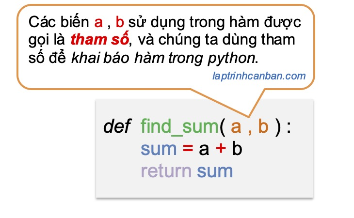
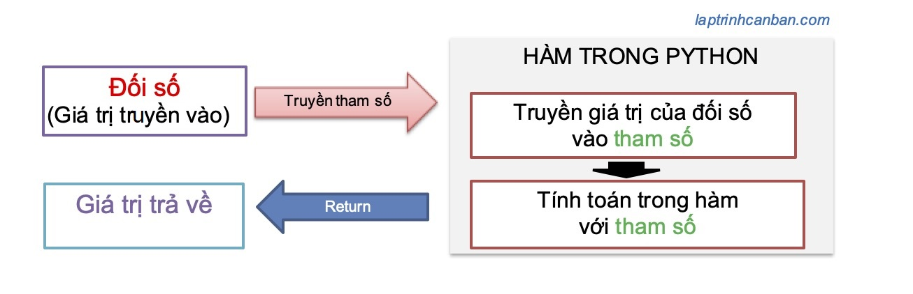
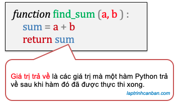

Hàm trong Python hay còn gọi là function trong python là một khái niệm quan trọng và mạnh mẽ, cho phép bạn tổ chức và tái sử dụng mã một cách hiệu quả. Hàm là một khối mã hoặc tập hợp các câu lệnh được đặt tên và thực thi khi cần. Chúng giúp bạn chia nhỏ một chương trình thành các phần nhỏ hơn, làm cho mã trở nên dễ quản lý và dễ đọc hơn.
- Bài viết này bao gồm các khái niệm tổng quát về hàm trong Python. Về cách định nghĩa và gọi hàm, hãy tham khảo bài viết Def trong python và cú pháp tạo hàm.
Chúng ta cần quan tâm tới ba thành phần sử dụng trong hàm python như sau:
- Tham số (Parameter)
- Đối số (Argument)
- Giá trị trả về (Return values)
Và chúng ta cũng cần làm chủ 3 loại hàm trong python như sau:
- Hàm có sẵn trong python
- Hàm trong module python
- Hàm Python do người dùng định nghĩa
Hãy cùng Kiyoshi làm rõ các kiến thực này ở phần dưới đây.
Hàm trong Python là gì
Khái niệm hàm trong Python
Hàm trong Python là một tập hợp các xử lý nhằm thực hiện một chức năng cụ thể nào đó trong chương trình. Hàm cho phép bạn kết hợp các xử lý khác nhau thành một và đặt tên cho nó. Sau khi tạo và đặt tên cho một hàm, chúng ta chỉ cần gọi tên hàm ra mỗi khi cần sử dụng đến nó trong chương trình.
Bằng cách kết hợp các xử lý lại thành một hàm, chúng ta không cần viết lại các xử lý nhiều lần, qua đó có thể giảm sai sót khi viết code, cũng như có thể tái sử dụng hàm cho một chương trình khác.
Một hàm có thể nhận một giá trị và trả về một giá trị đã trải qua một số xử lý, do đó nó có khả năng tạo ra công suất tối đa chỉ với lượng mã chương trình tối thiểu.
Không quá lời khi nói rằng làm chủ hàm trong python là một kỹ năng cần thiết mà bất kỳ lập trình viên nào cũng cần phải có.
Thành phần trong hàm trong python.
Khi học về hàm trong python chúng ta cần nắm rõ 3 thành phần của hàm gồm tham số, đối số và giá trị trả về.
Để hình dung ra các thành phần có hàm trong python, hãy cùng xem một ví dụ đơn giản về hàm sau đây. Hàm giúp chúng ta tính tổng hai số và trả về kết quả trong chương trình như sau:
def find_sum(a,b): |
Chúng ta sử dụng hàm def trong python để khai báo hàm, và các biến có tên như a và b sử dụng khi chúng ta khai báo hàm find_sum ở trên được gọi là tham số.
Sau khi khai báo một hàm, chúng ta có thể sử dụng hàm đó bằng cách gọi hàm trong python như dưới đây:
tổng = find_sum(1,2) |
- Chi tiết về cách sử dụng hàm def để khai báo hàm trong python cũng như là cách gọi hàm trong python, bạn hãy xem tại bài viết Def trong python và cú pháp tạo hàm.
Khi chúng ta gọi hàm trong python, chúng ta truyền các giá trị thực như 1 và 2 ở ví dụ trên vào tham số và tính toán trong hàm. Các giá trị thực truyền vào hàm được gọi là đối số, và việc truyền giá trị thực vào hàm để tính toán gọi là truyền tham số trong python.
Sau khi hàm được thực thi xong, hàm sẽ trả về cho chúng ta một giá trị, và chúng ta gọi đây là giá trị trả về trong hàm Python.
Tại sao sử dụng hàm trong Python?
Hàm là một phần quan trọng và cơ bản trong lập trình Python. Chúng giúp bạn tổ chức mã, tạo cấu trúc logic, và tăng tính tái sử dụng. Bạn có thể tự định nghĩa các hàm hoặc sử dụng các hàm có sẵn trong thư viện Python. Sử dụng hàm một cách hiệu quả là một trong những khía cạnh quan trọng nhất của việc trở thành một lập trình viên Python thành thạo.
Hàm có một số lợi ích quan trọng khi lập trình bằng Python:
Tái sử dụng mã: Bạn có thể định nghĩa một hàm một lần và sử dụng nó nhiều lần trong chương trình của bạn. Điều này giúp giảm sự lặp lại và tăng tính hiệu quả của mã.
Tạo cấu trúc logic: Hàm giúp bạn chia nhỏ chương trình thành các khối logic nhỏ hơn, làm cho mã dễ đọc và dễ quản lý hơn.
Tái sử dụng thư viện: Python cung cấp nhiều thư viện hữu ích bên ngoài. Bạn có thể sử dụng các hàm trong các thư viện này để thực hiện các tác vụ cụ thể mà không cần viết lại từ đầu.
Debug dễ dàng: Việc chia nhỏ chương trình thành các hàm giúp bạn xác định nhanh chóng vị trí của lỗi và thực hiện kiểm tra từng phần.
Tích hợp dễ dàng: Hàm cho phép bạn tích hợp mã từ nhiều nguồn khác nhau, làm cho quá trình phát triển phần mềm trở nên dễ dàng hơn.
Các loại hàm trong python
Sau khi đã biết các định nghĩa sử dụng trong hàm python, sau đây chúng ta sẽ cùng tìm hiểu các loại hàm trong python nhé.
Trong python có ba loại hàm, đó là các hàm có sẵn trong python , hàm trong module python, và hàm Python do người dùng định nghĩa.
Các hàm có sẵn trong python
Các hàm có sẵn trong python là các hàm được chuẩn bị sẵn trong python và được tích hợp sẵn sau khi bạn cài đặt python. Do các hàm này có sẵn trong chương trình python nên chúng ta có thể sử dụng chúng trực tiếp mà không cần import chúng trong chương trình Python.
Ví dụ, các hàm như hàm print(), hàm int(), hàm len(), hàm range() v.v.. đều là các hàm có sẵn trong python và bạn có thể sử dụng trực tiếp chúng trong chương trình như sau:
chuoi = "Tự học python cho người mới bắt đầu" |
Hàm trong module python
Hàm trong module python là các hàm được đóng gói trong các module python. Do hàm trong module python không được cài sẵn trong chương trình, nên chúng ta cần phải import module chứa hàm vào chương trình trước khi bắt đầu sử dụng chúng.
Ví dụ, các hàm xử lý file trong python như hàm os.rename() dùng để đổi tên file trong python, hoặc hàm os.path.join() dùng để nối đường dẫn trong python đều là các hàm trong module os, và chúng ta cần import module này vào chương trình trước khi sử dụng chúng như sau:
import os |
Hàm Python do người dùng định nghĩa
Hàm Python do người dùng định nghĩa (user-defined functions)) là các hàm mà chúng ta tự mình tạo ra bằng cách khai báo chúng trong chương trình. Sau khi khai báo hàm, chúng ta có thể sử dụng chúng trực tiếp trong chương trình hoặc có thể đóng gói chúng vào trong các module tự tạo và tái sử dụng trong các chương trình khác khi cần thiết.
Hàm Python do người dùng định nghĩa có ưu điểm rất lớn, đó là sự tự do điều chỉnh hàm theo ý mà bạn muốn, bởi vì hàm là do bạn tự tạo ra, tự bạn thiết kế và làm chủ nó.
Cách khai báo hàm trong python cũng khá là đơn giản, chúng ta sử dụng lệnh def và khai báo tên hàm cũng như các câu lệnh xử lý trong hàm ở bên trong khối def đó. Ví dụ, bạn có thể tự tạo một hàm tìm tổng của hai số như sau:
def find_sum(a,b): |
Cách sử dụng hàm Python do người dùng định nghĩa cũng giống như các hàm khác, sau khi bạn đã khai báo hàm xong, chỉ cần gọi tên hàm khi cần sử dụng là xong.
c = find_sum(1,2) |
- Chi tiết về cách cách sử dụng hàm def để khai báo hàm trong python cũng như là cách gọi hàm trong python, bạn hãy xem tại bài viết Hàm def trong Python.
Mối quan hệ giữa hàm với tham số và đối số trong python
Tham số là gì | Parameter
Tham số (parameter) là các biến có tên được sử dụng để nhận các các giá trị truyền vào (Đối số- argument) để xử lý trong hàm. Tham số được sử dụng khi chúng ta khai báo hàm trong python.

Khi khai báo hàm trong python, chúng ta có thể đơn giản chỉ định các tham số như các biến a và b ở trên. Tuy nhiên thực tế với các cao thủ Python, họ sẽ dùng những loại tham số khác nhau để sử dụng trong các trường hợp khác nhau khiến code đẹp và chương trình chạy mượt hơn.
Theo như trang web hướng dẫn chính thực của python là Python Doccument thì tham số trong python gồm có 5 loại , tuy nhiên thông thường chúng ta sẽ sử dụng tới 4 loại tham số trong python như sau:
Tham số vị trí
Tham số keyword
Tham số mặc định
Tham số tùy biến
Trong khuôn khổ bài viết này, Kiyoshi sẽ không đề cập sâu tới vấn đề này. Tuy nhiên để giúp các bạn có thể sử dụng tham số trong python như các pro, Kiyoshi xin hẹn sẽ hướng dẫn bạn ở một bài viết khác nhé.
Đối số là gì | Argument
Đối số (argument) là các giá trị thực được truyền vào khi gọi hàm. Đối số được truyền vào hàm qua sẽ được gán vào tham số, và được sử dụng khi chúng ta gọi hàm trong python.

Cũng theo trang web hướng dẫn chính thực của python là Python Doccument thì có hai loại đối số trong python, đó là:
Đối số vị trí
Đối số keyword
Trong khuôn khổ bài viết này, Kiyoshi sẽ không đề cập sâu tới vấn đề này. Tuy nhiên để giúp các bạn có thể sử dụng đối số trong python như các pro, Kiyoshi xin hẹn sẽ hướng dẫn bạn ở một bài viết khác nhé.
Sự khác biệt giữa một đối số và một tham số
Kiyoshi chắc chắn rằng trước khi đọc bài viết này, sẽ có không ít bạn còn mập mờ chưa biết cách phân biệt tham số và đối số trong python đâu nhỉ. Tuy nhiên qua những phân tích ở trên, bạn đã hiểu đươc tham số và đối số trong python khác nhau như thế nào chưa? Hãy cùng tổng kết sự khác nhau giữa đối số và tham số nhé.
- Tham số là các biến có tên được sử dụng trong khai báo hàm.
- Đối số của hàm là các giá trị thực được truyền vào khi gọi hàm.
- Tham số nhận giá trị của các đối số được truyền vào từ ngoài hàm và thực hiện tính toán bên trong hàm.
Truyền tham số trong Python
Khi gọi một hàm số trong Python, chúng ta sẽ truyền các đối số (giá trị thực) vào hàm thông qua các tham số. Việc truyền đối số vào hàm thông qua tham số được gọi là truyền tham số trong Python, và được miêu tả như hình dưới đây:

Giá trị trả về (Return values) trong hàm python
Giá trị trả về giống như chính tên của chúng, là các giá trị mà một hàm trả về sau khi hàm đó đã được thực thi xong.

Các giá trị trả về của hàm có thể là một số, một chuỗi, một list hay bất cứ loại dữ liệu nào được quy định khi khai báo hàm.
Tuy nhiên cũng có những hàm không trả về bất cứ giá trị nào từ nó cả. Lúc này về mặc định thì các giá trị trả về sẽ trở thành none, null hoặc undefined.
Để trả về giá trị từ hàm, chúng ta cần dùng tới lệnh return trong python. Hãy xemm bài sau để biết thêm chi tiết.
- Xem thêm: Return trong python và giá trị trả về
Tổng kết
Trên đây Kiyoshi đã hướng dẫn bạn về hàm trong python hay còn gọi là function trong python rồi. Hàm là một phần quan trọng và cơ bản trong lập trình Python. Chúng giúp bạn tổ chức mã, tạo cấu trúc logic, và tăng tính tái sử dụng. Bạn có thể tự định nghĩa các hàm hoặc sử dụng các hàm có sẵn trong thư viện Python. Sử dụng hàm một cách hiệu quả là một trong những khía cạnh quan trọng nhất của việc trở thành một lập trình viên Python thành thạo.
URL Link
https://laptrinhcanban.com/python/nhap-mon-lap-trinh-python/ham-trong-python/ham-trong-python-la-gi/
HOME › python cơ bản - lập trình python cho người mới bắt đầu>>14. hàm trong python